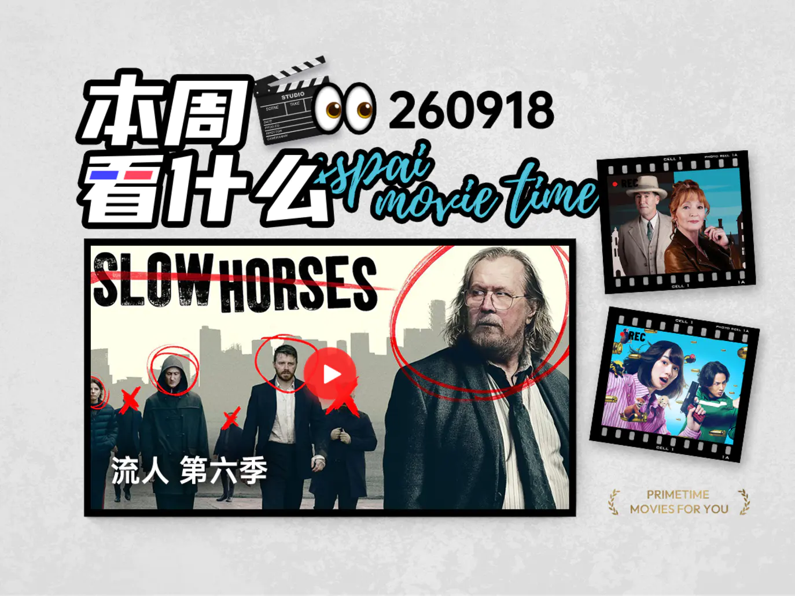
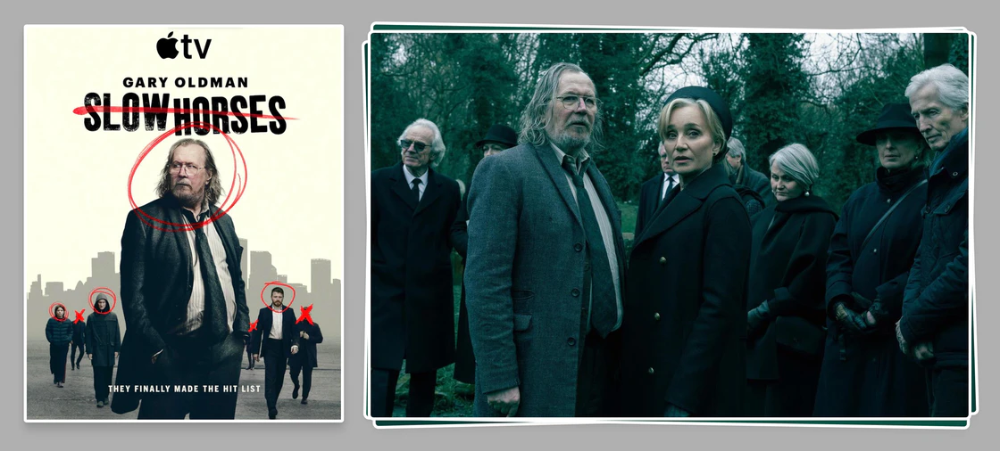
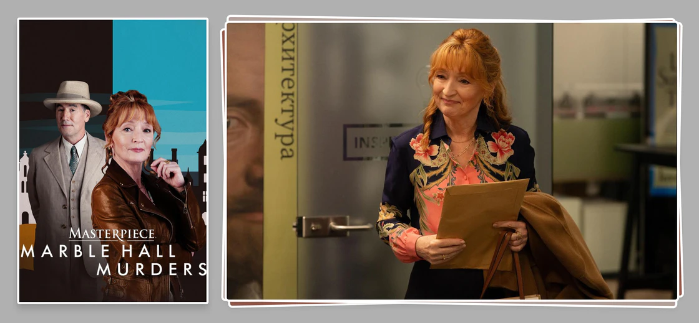
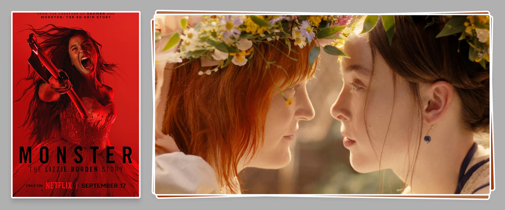
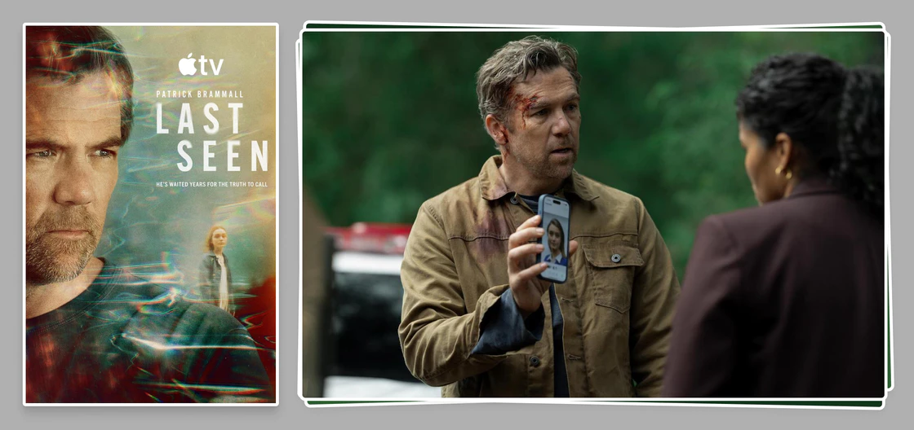
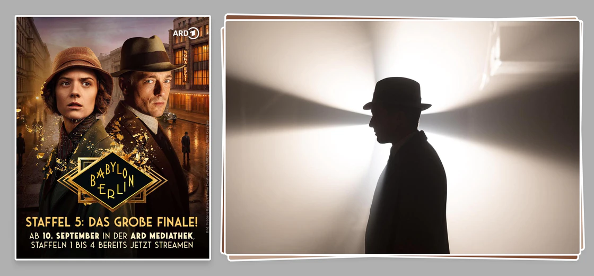
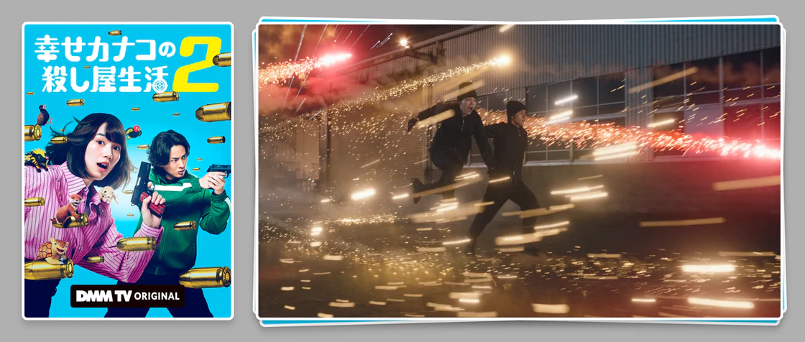
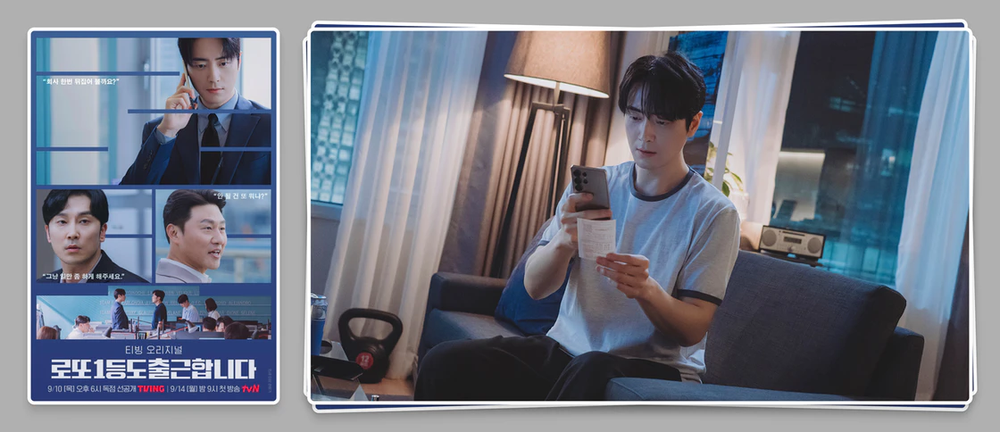
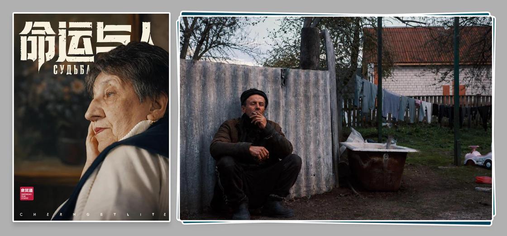
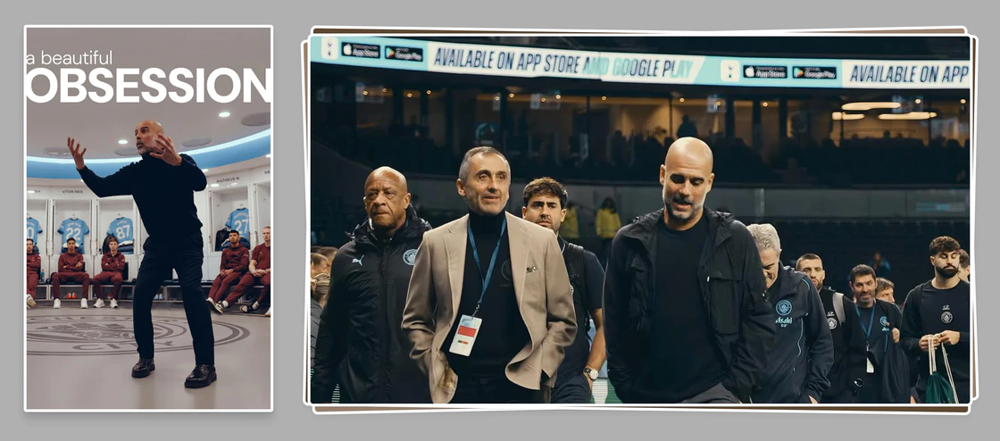

本周看什么 | 最近值得一看的 9 部作品

16 分钟阅读
👀 N 部作品推荐
- 近期佳作推荐：[英剧] 流人 第六季、[英剧] 翠鸟谋杀案、[美剧] 怪物：丽兹·波顿的故事、[澳大利亚] 最后目击、[德剧] 巴比伦柏林 第五季、[日剧] 幸福伽菜子的快乐杀手生活 第二季、[韩剧] 中头奖还是要上班、[纪录片] 命运与人、[纪录片] 美丽的执念
- 几则精彩预告：《哆啦 A 梦 大雄的蒸汽时间车》首支特报、《荒野丛林》终极预告、《黄金时段》新预告、《如何干一票大的》新预告
- 几则影视资讯：《生化危机：爆发夜》确认引进、《生日快乐》内地定档 10 月 23 日、《泥面人》新海报
[英剧] 流人 第六季

开启废物清除计划。
关键词：剧情 / 惊悚
又名：Slow Horses Season 6
@潘誉晗：斯劳屋部门流年不利，本就不被总部的人待见的他们没工资了，系统里也没有他们的任何记录，房屋中介甚至上门勘查了部门好做估价。曾在斯劳部门就职过的同事们遭到了两名专业杀手的袭击，还被断定是「自然死亡」，而杀手们的下个目标是瑞弗。另一边的瑞弗则沉浸在失去祖父的悲痛里，他和黛安娜交涉了一番关于葬礼的事，可也就是在葬礼上，他遇见了他那该死的雇佣兵父亲弗兰克。
被主创解读为「更黑暗、更暴力、也更情感化」的《流人》第六季，于本周三在 Apple TV+ 释出了首集。本季剧情根据系列小说第六本《间谍国度》（大陆已引进）和第七本《斯劳屋》改编，删改了一些内容后，首集开篇就初现了这季矛盾冲突的端倪：斯劳屋似乎正被清算，成为部长的黛安娜却对此事毫不知情。第六季的《流人》水准在线，拉满了悬疑氛围的同时，又有大量笑点点缀，没有狗尾续貂真是太优秀了～
[英剧] 翠鸟谋杀案

和苏珊一起推理吧。
关键词：悬疑 / 犯罪
又名：Marble Hall Murders / 大理石厅谋杀案
@利兹与青鸟：苏珊从希腊克里特岛回到伦敦后，重操旧业，出任一家独立出版社的编辑，负责一本新的阿提库斯·庞德侦探小说，时间线接在《喜鹊谋杀案》之后，名为《庞德最后的案件》。庞德前往故乡希腊的科孚岛度假疗养，偶遇查尔方特夫人携第二任丈夫埃尔默和一众子女，来此度过自己的最后一个夏天，却遭人下毒，死于非命。
原著作者安东尼·霍洛维茨继续担任本系列的编剧，依旧采用书稿与现实的双案双线叙事，由同一组演员饰演两个案件中完全不同却又息息相关的人物，但两个故事在画面质感上有着明显区分，彼此间的转场设计也舒适且巧妙。
[美剧] 怪物：丽兹·波顿的故事

挑选一把趁手的斧头吧。
关键词：犯罪 / 惊悚
又名：Monster: The Lizzie Borden Story / 怪物 4
@利兹与青鸟：本季的故事在一首《鹅妈妈童谣》中开始，丽兹·波顿用斧头砍了母亲 40 下、父亲 41 下，而这则童谣则来源于 1892 年的真实凶杀案。丽兹的母亲在她两岁时离世，经营着棺材铺的奸商父亲对家庭不闻不问，继母也对她极尽打压和言语羞辱，丽兹本人在镇上也被视为异类，尽管如此丽兹还是成长为了一个天真可爱的姑娘。
本剧摄影带着浓厚的历史感，也不乏美如仙境的场景，喜欢与大自然和鸟类为伴的丽兹宛若仙子，和后续的血腥杀戮形成鲜明对比，配合摇滚乐和一些邪典味的画面，视听体验极佳。
[澳大利亚] 最后目击

但是失踪并不意味着死亡，对吧？
关键词：剧情 / 惊悚
又名：Last Seen
@潘誉晗：一场暴雨洗涤着世间的一切，也使一具幼童的骸骨从地里重见天日，而这具尸骨的出现，也打破了伊恩宁静的生活。伊恩本是一名警探，十一年前他的女儿玛姬失踪后，伊恩的人生就彻底失序。他和妻子离了婚，开始酗酒，他放弃了一线工作，成为了一名出色的调度员，而这具尸骨的出现、DNA 与他和前妻不相符的事实、加上他接到了一个少女「我好像是玛姬」的求助电话，让伊恩灰色的人生，再次出现了希望。
由《王冠》导演克里斯蒂安·施沃霍夫所指导的这部澳大利亚新剧，根据瑞安·戴维扬曾获得 CWA 匕首奖的小说《调度员》改编，讲述了一名绝望的父亲，自三岁女儿失踪后浑浑噩噩，在确信女儿还活着的情况下，决心找出女儿的故事。澳洲维多利亚州的这个海滨小镇，阴冷、灰暗、辽阔，静谧又荒凉的海滨风光，让这个案件也变得更为扑朔迷离——原来这个看似平静的小镇里，每个人都藏着秘密。
[德剧] 巴比伦柏林 第五季

可是人啊，真的能离开巴比伦吗？
关键词：剧情 / 惊悚 / 犯罪
又名：Babylon Berlin Season 5
@潘誉晗：这天，格雷夫如约去见福斯特医生，可就在办公室门口，见到了医生慌乱离去的模样。他走进办公室，却撞见了医生助手的尸体。他给警局打了匿名电话。接到报警的夏洛蒂本以为这只是一桩寻常命案，没想随着调查的深入，发现这起案件另有玄机。福斯特医生专攻精神科，一战时期，他曾用心理暗示的方式治疗了一位患有癔症性失明的士兵，这个治疗过程也被他拍摄了下来。
这个士兵名叫希特勒，刚被陆军元帅兴登堡任命为德意志帝国的总理。
《巴比伦柏林》的第五季非常聪明地从一个和希特勒有关的案件切入，然后一点一点地推进，让观众看到了独属于那个年代的混乱与纷争。我们看到了充满欲望的政客骄傲自满的模样；看到了一群为了革命甘愿牺牲自己的共产主义者；更看到了一群以为能在希特勒带领下，生活变得更好的德国老百姓——原来个人的命运与无解的局，早已与时代绑在了一起。
[日剧] 幸福伽菜子的快乐杀手生活 第二季

代表月亮消灭你！
关键词：漫画改 / 喜剧 / 动作
又名：幸せカナコの殺し屋生活2 / Happy Kanako's Killer Life Season 2
@SHY：从黑心企业跳槽杀手公司的西野伽菜子，凭借上一份工作的经验混得风生水起，让杀手 K 的名号响彻江湖。这天，再次瞄准霸凌上司的伽菜子，与盯上同一位目标的个体户 Ado 不打不相识，加入杀手女子会美美联谊。然而，在此结识的杀手小七，却正在寻找杀兄仇人 K。
空窗一年半后，大名鼎鼎的 K 飒爽回归。由准原班主创打造，第二季延续了前作的成功密码，脱线展开接二连三，玩起梗来毫不手软，伽菜子的谐音梗小动物们悉数到场，和能年玲奈搭一起，整个人都被萌化。本季的动作戏同样可圈可点，第 1 集大闹赌场的女子组气场全开，颜值战力两相宜，不禁发出土拨鼠爆鸣。
剧集在漫画原著的基础上，补充适当原创情节，让剧情衔接更加圆润。新角色的身世各有玄机，老朋友的戏份也不落下，后续展开值得期待。多方助推之下，渐露苗头的感情线，没准会有大进步。把看不顺眼的人通通干掉，炸一出盛大烟花，这部收放自如的对社畜特攻喜剧，正是昏天黑地的工作之余，纾解压力的不二之选。
[韩剧] 中头奖还是要上班

这破班辞不了一点！
关键词：漫画改 / 喜剧 / 职场
又名：로또 1등도 출근합니다 / The Ordinary Jackpot
@SHY：名校毕业、就职名企的孔恩泰，对工作从不懈怠，晋升为公司最年轻的组长，也落下了一身病根，还被同事暗中排挤。忍气吞声的寻常一天后，因店员没钱找零而买了张彩票的他，却中了 19 亿韩元的一等奖。面对能改变人生的巨款，孔恩泰的决定是——继续照常上班。
人们总会幻想一夜暴富后的生活，先把看不惯的老板一脚踢开，装作不经意的一波炫耀之后，开启随心所欲第二人生。然而，生活远没有那么容易，中奖者破产的新闻更是屡见不鲜。本第 1 集用大量篇幅描写孔恩泰的日常，习惯忍让的他，不敢轻易动怒，将压力全揽在肩上。而彩票头奖的意义，正是不再忍气吞声的底气。
人是为了什么才拼命生活，又是从何时起不再拼命生活的？有了退路的恩泰，心态自然而然改变，对不公平的安排强硬表态，大胆承担可能失败的风险。不再有顾虑之后，工作和生活中的难题，没准也会迎刃而解。不满足于常见的打工人爽文，描绘从内颠覆公司制度的职场大剧，这部设定吸睛的剧集，或许也能令你共情。
[纪录片] 命运与人

人在这世界上，是有自己的使命和任务的。
@潘誉晗：这天饼叔来到了一栋住宅楼房，采访了一位非常慈祥的老奶奶。你当然可以感受到她身上的悲痛和遗憾，满头银发的她经历过核泄漏，被迫离开家乡的她怀念着故乡，可很神奇，在她身上你似乎收获了一种能量。
《命运与人》是食贫道「切尔诺贝利」系列的第三集，这一集的故事主要发生在白俄罗斯。他们先是找到了一位当时在辐射区负责孩童撤离的幼儿园院长，在老院长的诉说中，我们再次感受到了命运的残酷，因为当时撤离的队伍中，有老院长自己的孩子，但是她无暇顾及。他们还去了波列西耶国家辐射生态保护区，很神奇，这里充满了绿意，那是另一种生命安静的样子。
人这种生物是很坚韧的，经历过风霜、遭到过打击，但只要有目标和希望就能站起来，就像是生态保护区里的那些植被一样。这里的人啊，无所谓是俄罗斯人、乌克兰人还是白俄罗斯人，只要他们还能讲述，就能勇敢地活下去。
[纪录片] 美丽的执念

我其实一直都在沙漠里。
关键词：运动
又名：A Beautiful Obsession
@潘誉晗：纪录片从 23-24 年的英超说起，这个赛季曼城实现了四连冠，哈兰德蝉联金靴奖。一切似乎都诉说着这个球队的所向披靡。接着 24-25 赛季开始了，然后，那一年的 11 月和 12 月被称为瓜迪奥拉执教曼城历史上最黑暗时期的低谷。
曾获得 BAFTA 大奖的导演凯文·麦克唐纳，这次为我们带来了一部关于足球教练瓜迪奥拉的纪录片。只四集的纪录片并没有单纯地夸赞瓜迪奥拉的成绩，而是通过他执教曼城最后两个赛季的幕后故事，让大家进一步了解到他所坚持的足球理念。
就像纪录片的名字「美丽的执念」一样，瓜迪奥拉在足球上的追求近乎苛刻。他相信竞技体育也能拥有艺术的美感。所以对控球、跑位，甚至是球场上的每一个位置，都做了极其细致的研究，还会向球员们自嘲自己的婚姻来类比对于足球的热爱。这样不愿服输的偏执也许真的太过执念，但若是坚持了一辈子，又怎能不是一种美呢？